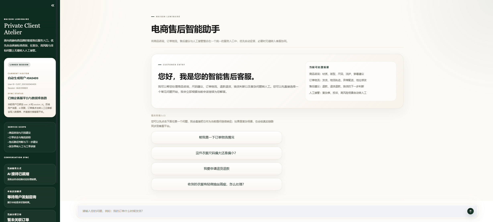
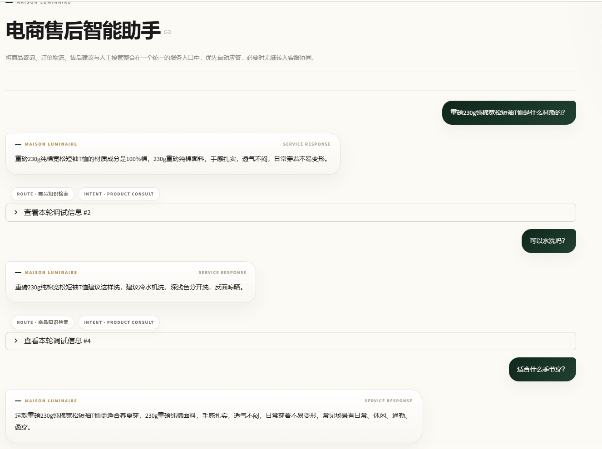
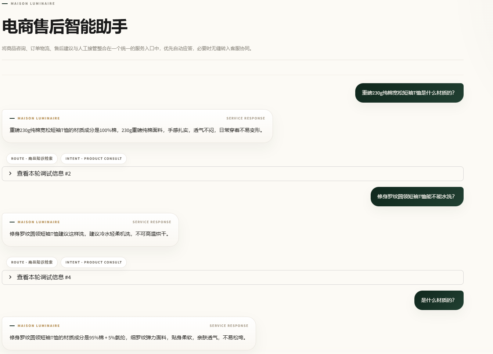
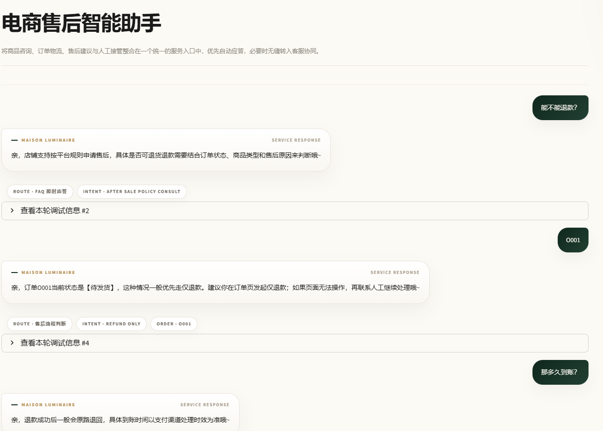
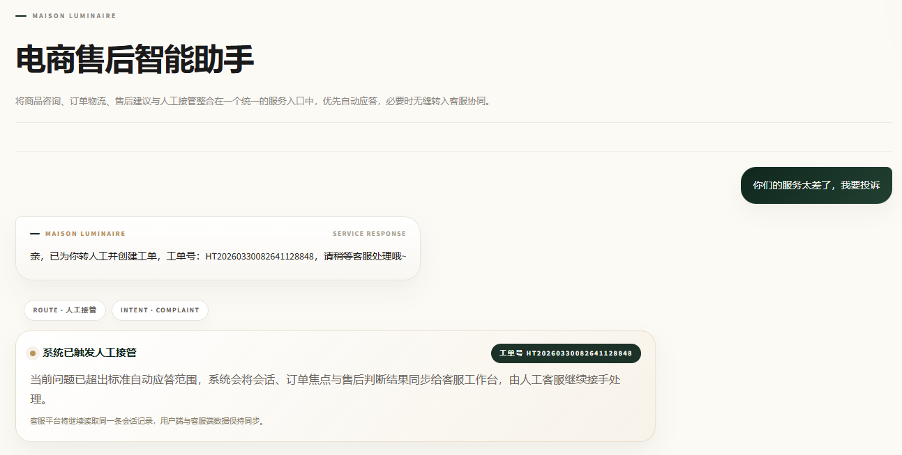

Research
真实反馈出发
研究 Keep 与 Freeletics 用户评价，先识别高频痛点，再决定方案方向。
AI Agent Portfolio
以 AI 客服 Agent 系统和 AI 健身 Agent 产品方案为核心，展示从问题拆解、系统设计到可交互原型的产品能力。
上半部分聚焦电商售后服务：FAQ、RAG、Workflow、人工兜底和评测闭环； 下半部分聚焦健身智能体：用户痛点分析、AI Coach 定位、今日任务、营养反馈和计划调整。
Portfolio Map
覆盖用户服务入口、客服工作台、知识库运营后台和评测数据看板。
从竞品反馈收敛核心问题，落到今日页、AI Coach、计划调整和埋点验证。
两个项目共同证明的能力：把真实场景中的复杂问题，整理成清晰的 Agent 职责、产品流程、界面结构和可验证的迭代闭环。
先识别业务或用户痛点，再把问题收敛成可落地的产品结构与核心路径。
明确 AI 负责什么、何时调用流程、何时转人工或进入安全兜底。
不停留在文档说明，把关键路径做成可以点击、可以展示的真实界面。
通过评测、bad case、埋点和优先级判断，让方案能持续优化。
Problem Context
传统问答系统只能覆盖 FAQ，难以进入订单、物流和售后等真实业务动作； 一旦进入复杂争议场景，AI 与人工之间就会出现明显断点。
物流、FAQ 等高频问题适合自动化处理，但售后争议、退款判断、异常状态识别需要更强的业务链路能力。
商品知识、政策规则、FAQ 一旦维护不及时，就会导致 RAG 命中不稳、话术不准，进而扩大 bad case 数量。
转人工后若无法继承前序对话、订单与风险判断，客服就需要重新理解上下文，用户也会失去连续服务体验。
Scenario Breakdown
电商售后不是单一问答场景，而是由售前、售中、售后与高风险场景共同构成。 先拆清问题类型，后续的分层路由设计才有依据。
以商品咨询和推荐为主，强调属性理解、知识命中与回答准确性。
订单和物流状态查询频次高，适合标准化流程处理，但需要接入真实业务状态。
退换货、退款与换货判断依赖订单状态、政策规则与上下文，业务复杂度显著提高。
一旦涉及争议、投诉、边界不清或服务失败，就必须将“自动处理”切换为“风险控制优先”。
Routing Strategy
Goals & Principles
目标不是简单接入大模型，而是围绕业务效率、服务体验和风险控制， 搭建一套既能自动承接、又能稳定协同人工的售后服务体系。
Product Goals
优先用 FAQ、RAG、Workflow 与人工兜底分层承接，不把复杂业务直接交给单一大模型判断。
在业务场景里，回答“好听”不如判断“正确”。所有界面和流程都围绕准确承接服务诉求展开。
当系统识别到复杂争议、边界不清或情绪风险时，应优先控制风险，而不是强行自动化完成。
通过转人工率、场景分布和异常案例来定义问题优先级，让优化动作有依据、有验证、有结果。
Core Mechanism
这不是单纯的对话页，而是把用户服务入口、客服工作台、知识库运营后台和评测数据看板串成一个可运营、可评测、可迭代的服务闭环。
优先处理高频固定问题，保证基础场景的响应速度与准确度。
结合商品静态知识与长文本政策，提升长尾问法和商品问答的稳定性。
驱动订单、物流、售后、库存等真实动作，让 AI 进入业务流程而非停留在问答。
高风险、复杂争议与边界不清场景自动转接人工，保障服务结果可控。
在统一入口发起商品咨询、物流查询与售后请求。
承接 AI 无法稳定处理的问题，继承上下文并继续完成服务。
维护知识资产，排查异常 chunk，修复线上 bad case 根因。
通过转人工率、场景分布与 bad case 记录推动版本优化。
AI Customer Service Agent System
这里集中展示 AI 客服 Agent 系统中的 5 个关键界面。左侧解释页面在闭环中的职责， 右侧直接使用真实截图展示完整页面结构。
LoginPage
customer_app.py
WorkspacePage.jsx
KnowledgePage.jsx
AnalyticsPage.jsx
AI Fitness Agent Case
这不是单独展示一个小程序页面，而是把 Keep 与 Freeletics 的用户反馈收敛成产品判断： 从界面布局、交互逻辑、数据反馈和功能优先级出发，落到可交互的智能教练 MVP。
Research
研究 Keep 与 Freeletics 用户评价，先识别高频痛点，再决定方案方向。
Problem
界面复杂、AI 定位分散、训练调整不稳定，是这次方案重点解决的对象。
Agent Ability
生成计划、调整今日训练、识别营养缺口，并在风险场景中保持安全边界。
Output
登录建档、今日首页、AI Coach、计划调整与埋点面板形成一条产品闭环。
Representative Dialogues
这一部分不再展示系统页面本身，而是用最新版本的真实对话截图，证明系统在商品问答、焦点商品切换、售后 workflow 和高风险兜底四类核心场景中的处理能力。
Entry State
这张图放在 4 组代表性对话之前，用来先交代用户服务入口的初始状态：系统如何向用户说明可处理场景、如何通过推荐问题降低提问门槛，以及为什么它不是普通聊天框，而是统一承接商品、订单、物流、售后与人工协同的服务入口。

Dialogue 01
这一组对话重点证明：当用户已经明确商品后，系统能够持续记住当前焦点商品，并在材质、洗护、适穿场景等连续追问下维持同一商品语境，不会被相似商品错误带偏。

Dialogue 02
这一组对话用来证明系统不是只会围绕一个商品重复回答，而是能够在用户明确提出新商品时优先切换焦点，并让后续“这款”“那这件”之类的追问自动承接新的商品对象。

Dialogue 03
这一组对话重点展示系统如何把模糊售后咨询转成可执行流程：先识别退款意图，再追问订单号，最后进入具体的事务处理链路，并承接“多久到账”这类后续售后问题。

Dialogue 04
这一组对话用于证明系统在投诉、赔偿、情绪升级等高风险场景中不会盲目自动化，而是优先进入人工兜底机制，并同步工单号与后续承接信息，确保服务结果可控。

Version History
这个项目的价值不在于一次性把功能堆满，而在于围绕真实问题逐步补齐能力边界。 我将迭代拆成四个阶段，每一步都对应一个更明确的业务目标。
先验证商品咨询、基础 FAQ 与知识检索链路是否成立，让系统能够稳定回答高频标准问题。
优先证明智能问答能力可用，建立最小可运行版本。
完成 FAQ 规则拦截、商品知识 RAG 和基础用户对话入口。
不再停留在“能回答”，而是开始接入订单、物流和售后流程，让系统能做业务判断和状态承接。
解决“传统 AI 客服只能答，不能办”的核心问题。
引入 Workflow 处理订单与物流场景，并补充售后判断与转人工链路。
把客服工作台和知识库管理独立出来，让系统具备人工介入、知识维护和异常修复能力。
解决 AI 与人工链路断裂，以及知识无法快速修复的问题。
完成 handoff_tickets、客服工作台、文档上传、chunk 可视化与知识节点管理。
在系统可运行后，进一步补上评测和复盘机制，让优化不依赖主观感受，而是回到数据和坏例上。
让系统具备持续迭代能力，而不是停留在一次性交付。
增加离线评测、开放问法补充评测、bad case 回流与数据看板，支撑版本优化。